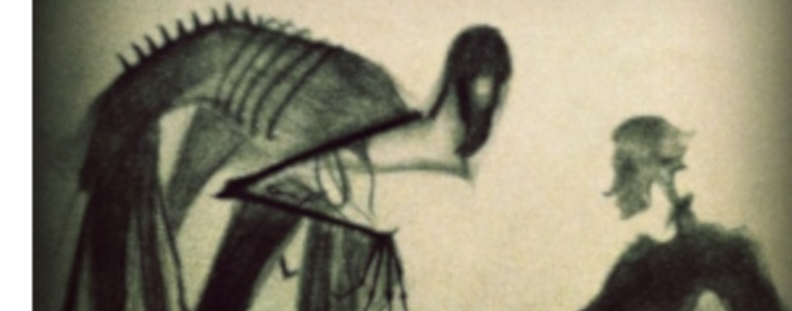

Los Tres Hermanos - Final 3

Pero el tercer hermano, el más humilde y sabio, se guardó la capa de invisibilidad. Durante muchos años, la Muerte no pudo encontrarlo. Solo cuando alcanzó una edad avanzada, el hermano menor se quitó la capa y se la dio a su hijo.
Y saludando a la Muerte como a una vieja amiga, se fue con ella, y juntos partieron de esta vida, como iguales.
